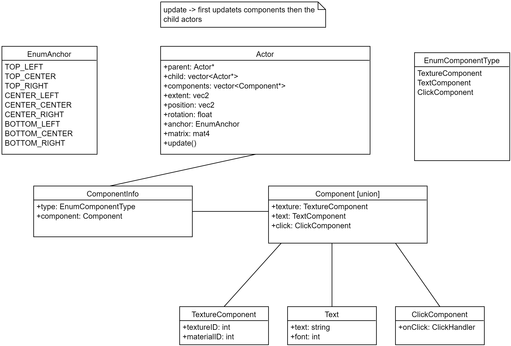

The current UISystem is inflexible and pretty much unusable as it only contains 2 methods that are impractical. It is missing dynamik layouting or hierarchies.
The solution would be to rework the entire system to add a layer of abstraction for the user to make it more developer friendly. However this should only be a wrapper and under the hood contain data oriented design.
The herby proposed Entity-Component-System (ECS) will have a Entity represented through Actor and components represented through the ComponentInfo. Every actor has all positional data as it is needed none the less. These are updatet and computed through the update function. The function is an event based trigger hence it should updatet after all changes to a Entity or Component are done or if external changes are made (e.g. Resolution change). The components will consist of a enum type which tells the type of component (e.g. TextureComponent) and the component in form of a union. A general storage is being allocated in vector on addition. A components or an acton can only have one parent respectively. Components will also have a update function which can updatet itself or the parent. Components are updatet before the children are.

It is justified to write this system. Better then nothing I guess.
The usage of templates and macros as well as a ECS is encouraged to further remove redundancy.
Status: RFC